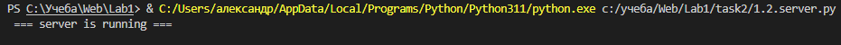
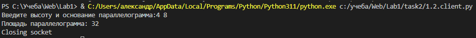
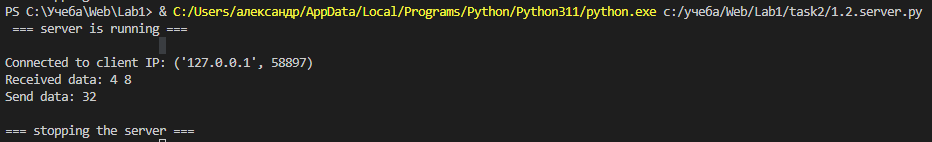

Задание №2
Реализовать клиентскую и серверную часть приложения. Клиент запрашивает у сервера выполнение математической операции, параметры, которые вводятся с клавиатуры. Сервер обрабатывает полученные данные и возвращает результат клиенту. Вариант: d. Поиск площади параллелограмма. Необходимо исользовать библиотеку socket.
Выполнение задания
Серверная часть
import socket
ip = "127.0.0.1"
port = 9090
buffer = 1024
TCPSocket = socket.socket(socket.AF_INET, socket.SOCK_STREAM)
TCPSocket.bind((ip, port))
TCPSocket.listen(1)
print(" === server is running ===\n")
def parallelogramArea(h, a):
area = a * h
return area
while True:
connection, adrress = TCPSocket.accept()
try:
print("Connected to client IP: {}".format(adrress))
while True:
data = connection.recv(buffer)
if not data:
break
data = data.decode("utf-8")
print("Received data: {}".format(data))
if data == "stop":
break
array = list(map(int, data.split()))
answer = parallelogramArea(array[0], array[1])
print("Send data: {}".format(answer))
answer = str.encode(str(answer))
connection.send(answer)
finally:
print("\n=== stopping the server ===")
connection.close()
break
Клиентская часть
import socket
serverAdress = ("127.0.0.1", 9090)
buffer = 1024
TCPSocket = socket.create_connection(serverAdress)
try:
data = input("Введите высоту и основание параллелограмма:")
data = str.encode(data)
TCPSocket.sendall(data)
data = TCPSocket.recv(buffer)
data = data.decode("utf-8")
print("Площадь параллелограмма: {}".format(data))
finally:
print("Closing socket")
TCPSocket.close()
Примеры
Запуск сервера  Запуск клиента, отправка данных серверу, получение ответа  Обработка данных от клиента, отправка ответа 